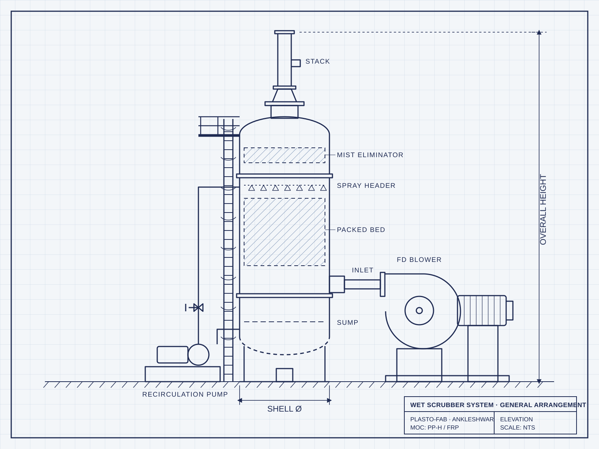

01 · Design
The Right Material for the Right Application.
Each job starts with the chemical, the temperature and the duty. We choose the thermoplastic, FRP or dual laminate to suit them, and make the fabrication drawings ourselves or work from the drawings you supply.
